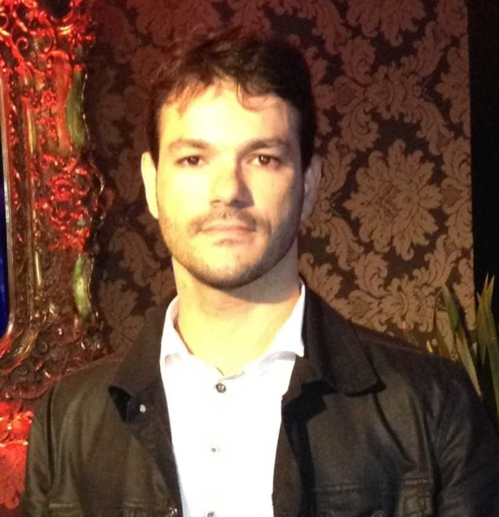

Lincon I. Marchesi
- Brasileiro, divorciado, 36 anos
- Rua Claricio Alves Ribeiro Nº 185
- Bairro: Itanguá - Caricica – Espirito Santo
- Telefone: (27) 988.320.865
- Email: lincon83@gmail.com
- https://www.linkedin.com/in/lincon-marchesi-103a0662/
- https://github.com/Lincon83
OBJETIVO
- Me tornar o mais novo empreendedor de sucesso com tecnologia
FORMAÇÃO
- Cursando 3º Período de Análise e Desenvolvimento de Sistemas – Faculdade Faesa - Noturno
- Universidade Estácio de Sá - Redes de Computadores - 2012
- Ensino Médio – Conclusão: 2009
EXPERIÊNCIA PROFISSIONAL
- Multiconecta Soluções Informática - Analista de Suporte Pleno - set de 2005 / ago de 2018
- Trabalho preventivo e corretivo em rede, mantendo rotinas de backup e integridade dos sistemas operacionais para
Servidores (Windows, Linux, XenServer e VM-ware ESX e ESXi), sistemas internos e reinstalações dos Servidores e das
estações de trabalho no ambiente Windows e Linux, suporte técnico de segundo nível e treinamento de usuários.
- Configuração de Acesso Remoto. (VPN)
- Experiência sólida em ambiente de TI de Contact Center ativo e receptivo, atendimento ao usuário 1º e 2º nível,
acompanhamento e encaminhamento de chamados, monitoramento de disponibilidade de servidores/serviços.
- Boa experiência em resolução de problemas de hardware/software em Ambiente Windows e ferramentas.
- Criação, configuração e administração de usuários em Active Directory
- Instalação e manutenção de computadores, suporte em sistemas operacionais Windows XP, Windows 7 e Windows 10 ,
manutenção impressoras (1°nível), rotina diária de chamados.
- Dumus Uniformes - Administração da Rede - dez de 2003 / ago de 2004
- Trabalho preventivo e corretivo na rede, mantendo rotinas de backup e integridade dos sistemas operacionais,
sistemas internos e reinstalações das estações de trabalho no ambiente Windows. Arte finalista em programas
gráficos (Corel e Adobe).
- Edigrafica - Administração da Rede - jun de 2002 / jun de 2003
- Trabalho preventivo e corretivo na rede, mantendo rotinas de backup e integridade dos sistemas operacionais,
sistemas internos e reinstalações das estações de trabalho no ambiente Windows. Arte finalista em programas
gráficos (Corel e Adobe).